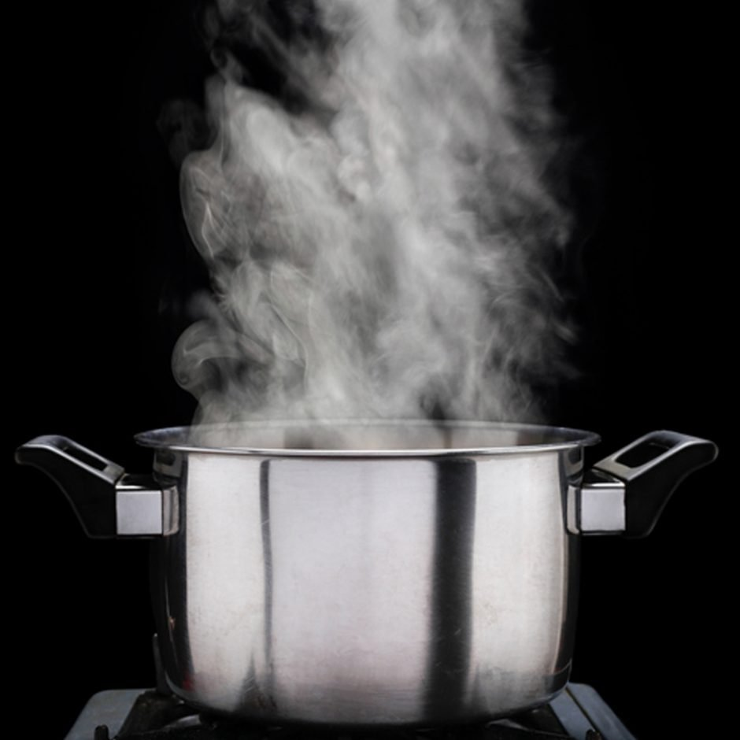

Barbacoa

Savory and tasty barbacoa for your friends
Do you like beefy salty goodness? This barbacoa recipe can fill your burritos or make a sloppy joe. You won't regret eating this, its the best!
Ingredients
- 1 (2.5 to 4 pound) beef brisket
- 3 chipotles from a can plus 3 tbsp of this sauce
- 2 cups of beef stock
- 1 small white onion, diced
- 3 large cloves of garlic
- 2 tsp of oregano
- 1/2 tsp of ground cloves
- 1 tbsp of apple cider vinegar
- 2 bay leaves
Steps
- Make a liquid puree with all of your ingredients except beef and the bay leaves using a blender or food processor.
- Trim any excess fat from your brisket and place it in your slow cooker fat cap side down.
- Pour the rest of your liquid puree over your brisket ensuring top and sides are coated.
- Cook on low for 8 hours.
- Remove your brisket to a large bowl or container to pull/shred with 2 forks.
- Add some of the cooking liquid from the crock pot to your pulled brisket to taste.
- Eat in tacos, burritos or as a sloppy joe